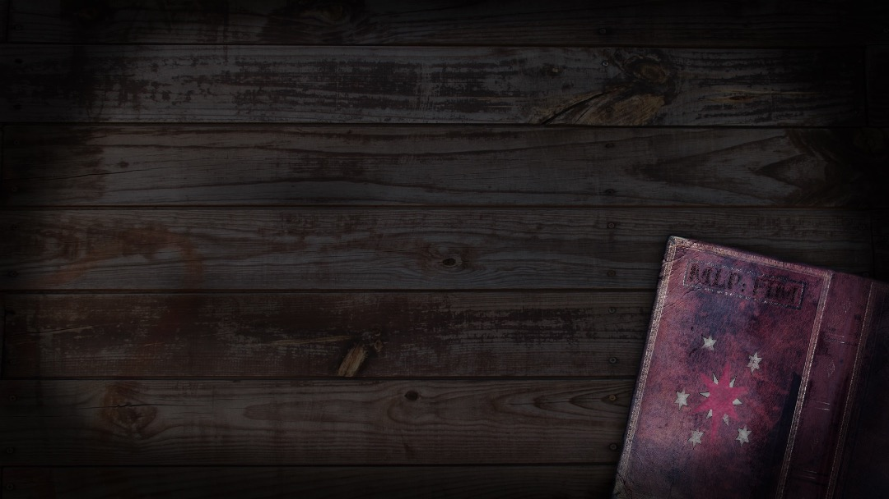

<ion-content class="card-background-page">

  <ion-card>
    
    <div class="card-title">Book Store</div>
    <div class="card-substitute">
      <button ion-button icon-left round>
        <ion-icon name="facebook"></ion-icon>
        Facebook
      </button>
      <button ion-button icon-left round (click)="google()">
        <ion-icon name="google"></ion-icon>
        Google
      </button>
      <button ion-button icon-left round>
        <ion-icon name="twitter"></ion-icon>
        Twitter
      </button>
    </div>
  </ion-card>
 
</ion-content>
